Hello,
I’M MIRJAN
M.Sc. in Remote Sensing and GIS
& IBM Data Science Professional Certificate
About Me
Mirjan Ali Sha [Professional Profile]
GIS Engineer & Data Scientist
I am a results-driven GIS Engineer and Data Scientist with over 5 years of expertise at the intersection of geospatial technology and Machine Learning. Currently, I specialize in the ML-GIS department at Nurture (AFS) Agtech, where I architect high-performance pipelines that transform raw satellite data into actionable insights for sustainable agriculture.
My work focuses on building scalable infrastructure using PySpark, Kubernetes, and AWS, while leveraging n8n to develop secure, production-grade REST APIs and advanced AI Chat Agents for intelligent geospatial interaction. I am deeply committed to open-source innovation, having developed multiple PyPI packages and QGIS plugins that empower the global geospatial community.
Degree : Master of Science (M.Sc.)
City : Bengaluru
Age :
Email : mirjan.personal@gmail.com
Phone : +91 xxxxxxxxxx
Experience : 5+ Years
QGIS Plugins : 15+
PyPI Packages : 4
Total Tools Downloads : 100K+
Skills & Education
Technical Skills
Education & Certifications
2018-2020
M.Sc. in Remote Sensing and GIS
Vidyasagar University - CGPA: 8.44. Specialized in Remote Sensing Data Analysis, GIS Works, WebGIS, Geospatial Analysis, and R Programming.
2019-2020
IBM Data Science Professional Certificate
IBM Skills Network (Coursera) - Completed 9 comprehensive courses covering Python, Machine Learning, Data Visualization, and Statistical Analysis.
2022-2023
Business Analytics Certification
IIIT Bangalore (UpGrad) - 6 months intensive program covering Business Analytics, Data Mining, and Advanced Statistical Methods.
2020-2021
Geographic Information System Specialization
UC Davis University (Coursera) - 5 courses covering GIS concepts, Spatial Analysis, and Cartographic Design.
Working Experience
May 2022 - Present
GIS Engineer (ML-GIS Department)
Nurture (AFS) Agtech Pvt. Ltd, Bangalore
• Developing advanced geospatial solutions for Burn Detection,
Tillage Detection, and Bailing Detection using satellite imagery
• Building end-to-end ML pipelines from raw MSI/SAR tile data to database insights using
PySpark and cloud technologies
• Working with Big Data infrastructure: AWS S3, Athena Query, ECR, Jenkins, Kubernetes,
Spinnaker, and Azure Databricks
• Implementing Carbon Credit sustainability projects using Python, Google Earth Engine,
and QGIS
• Building production-grade REST-like API endpoints using n8n Webhooks and
high-security
automation workflows
• Developing and deploying specialized AI Chat Agents for intelligent
geospatial data
interaction
Tools: PySpark, AWS Suite, Kubernetes, Google Earth Engine, QGIS, n8n,
Jenkins, GitLab, Docker
Sep 2021 - Mar 2022
GIS Engineer
SkyMap Global Pvt. Ltd, Kolkata
• Led Administrative Mapping Project involving village-level
administrative layout creation
• Developed three-tier administrative boundary systems and managed large-scale database
updates
• Implemented quality control processes for spatial data validation and accuracy
assessment
Tools: ArcGIS, Spatial Database Management
Mar 2021 - Sep 2021
GIS / CAD Engineer
Aabsys IT Pvt. Ltd, Bhubaneswar
• Executed Navigation Mapping Project for city-level road and
administrative boundary extraction
• Developed automated validation systems using surveyed geotagged photos
• Created custom ArcGIS Python tools and ModelBuilder workflows to optimize team
productivity
Tools: ArcGIS, AutoCAD Map 3D, Python Toolbox, ArcGIS ModelBuilder, Zoho
Project Management
Jan 2020 - Aug 2020
Research Scholar (Dissertation)
Vidyasagar University, Medinipur
• Conducted research on "Crop Identification and Yield Estimation
Using Sentinel-1 & 2 on Google Earth Engine"
• Supervised by Dr. Dipanwita Dutta, Assistant Professor
• Developed machine learning models for agricultural monitoring using multi-spectral
satellite data
Tools: Google Earth Engine, JavaScript, Statistical Analysis
Services (Offered)
Geospatial Analysis
Advanced spatial data analysis using satellite imagery, drone data, and custom GIS plugin development for QGIS & ArcGIS. Specializing in agricultural monitoring, environmental analysis, and spatial modeling with automated GIS workflows.
Websites and Web Apps Development
Designing and developing modern, responsive web applications and interactive GIS dashboards. Specializing in integrating spatial data into web platforms for seamless visualization and interactive user experiences.
Python Package Development
Developing custom Python packages and automated tools for geospatial data access, analysis, and processing. Published packages include open-geodata-api, astrokundali, and ai-research-planner available on PyPI with comprehensive documentation.
Satellite Data Downloading Pipeline Development
Building automated pipelines for satellite data acquisition, processing, and analysis using cloud infrastructure. Experience with Sentinel, Landsat, and commercial satellite data through Google Earth Engine, AWS, and Azure platforms.
GenAI Development
Developing AI-powered solutions using modern frameworks including Transformers, Hugging Face, Ollama, OpenWebUI, and MCP (Model Context Protocol). Specializing in geospatial AI applications and intelligent data analysis workflows.
Data Science & AI Modeling
Developing and training machine learning models for geospatial applications, agricultural monitoring, and environmental analysis. Using TensorFlow, PySpark, and cloud-based ML platforms for scalable AI solutions.
Other Projects
Open Source Contributions & Professional Projects
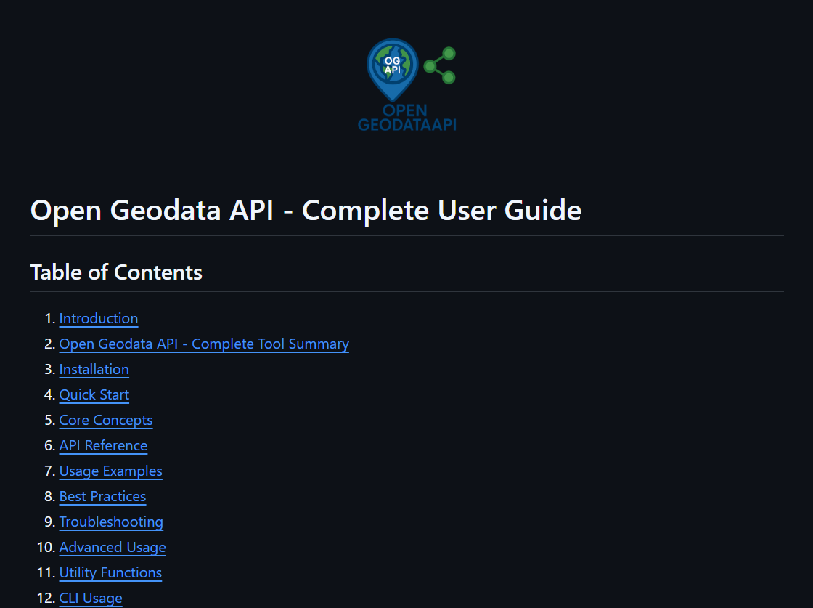
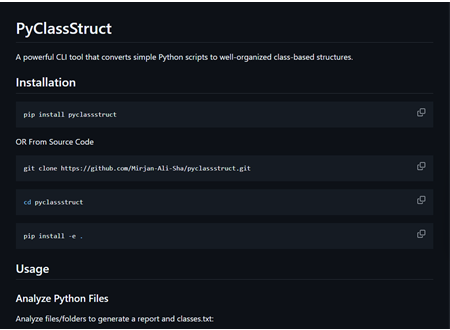
PyClassStruct
A powerful CLI tool that converts simple Python scripts to well-organized class-based structures.
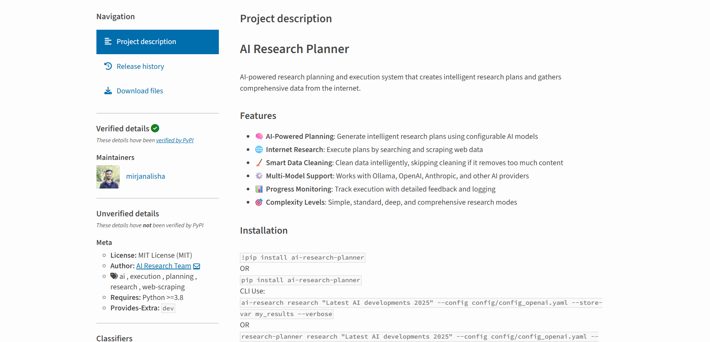
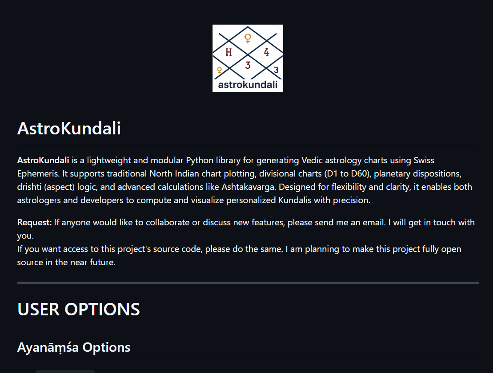
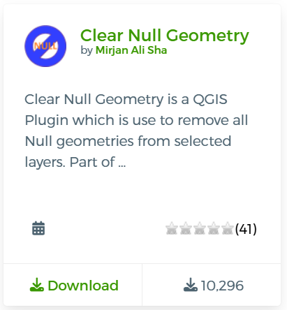
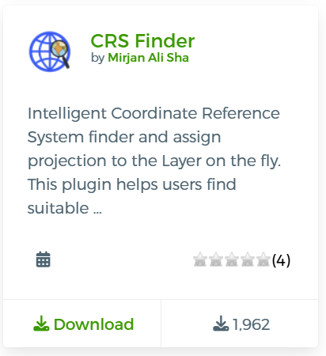
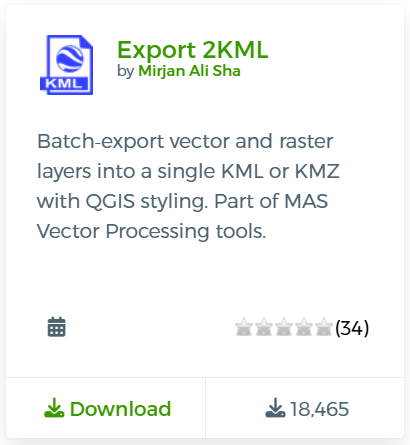
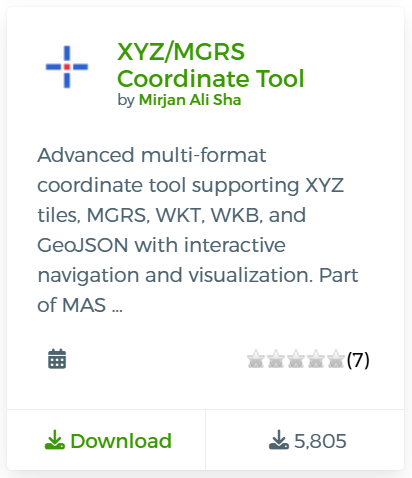
XYZ/MGRS Coordinate Tool
Interactive coordinate capture tool for XYZ tile coordinates and MGRS grid references with navigation and visualization capabilities
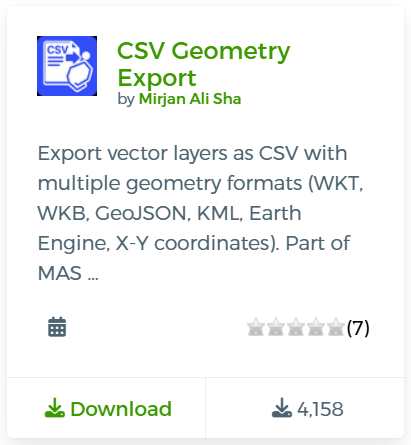
CSV Geometry Export
Export vector layers as CSV files with geometry and customizable column names.
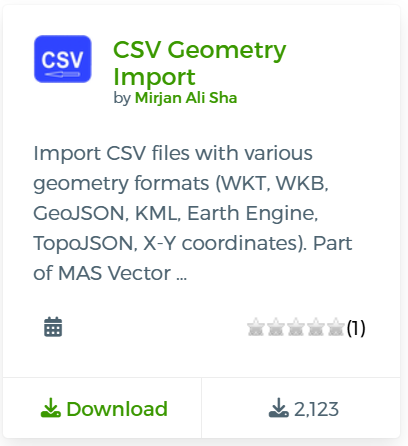
CSV Geometry Import
Import CSV files with various geometry formats directly into QGIS. Part of MAS Vector Processing tools.
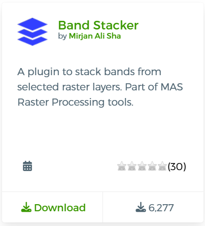
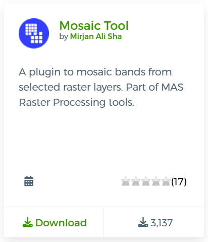
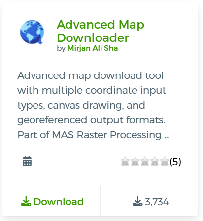
Advanced Map Downloader
Download maps with multiple coordinate input types and georeferenced output formats. Part of MAS Raster Processing tools.
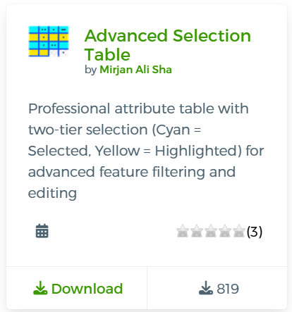
Advanced Selection Table
Professional attribute table with two-tier selection for advanced feature filtering and editing
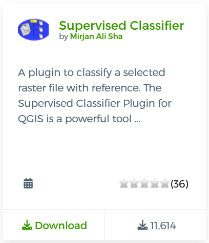
Supervised Classifier
Machine learning classification plugin for satellite imagery
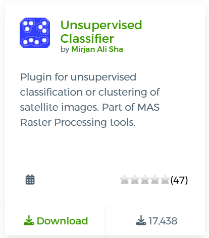
Unsupervised Classifier
Automated clustering and classification for raster data
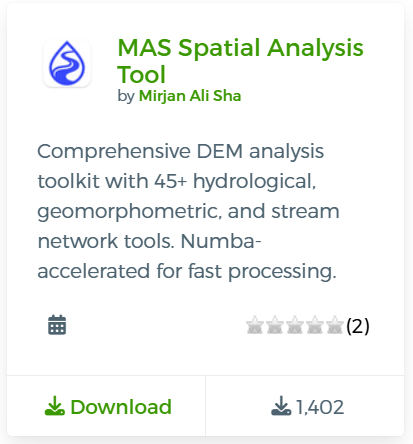
MAS Geospatial Analysis
Comprehensive DEM analysis toolkit with 45+ hydrological and geomorphometric tools
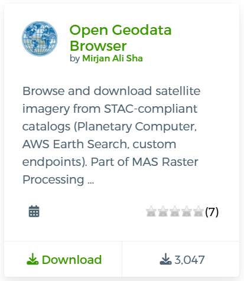
Open Geodata Browser
Browse and download satellite imagery from STAC-compliant catalogs
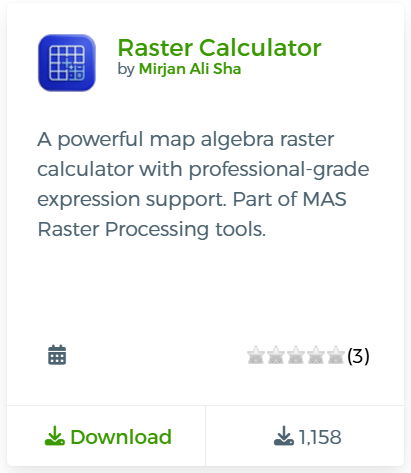
Raster Calculator
Powerful map algebra raster calculator with professional-grade expression support
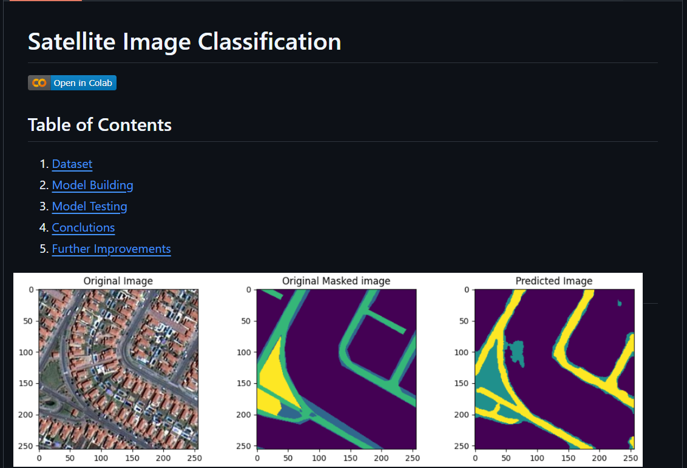
Semantic Segmentation of Aerial Imagery
Aerial Image Classification using U-Net on Dubai dataset
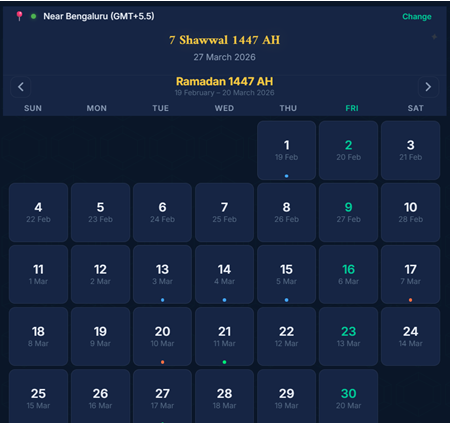
Islamic Calendar
A Progressive Web App (PWA) displaying the Hijri (Islamic) calendar alongside the Gregorian calendar, featuring prayer times, Qibla direction, and location detection.
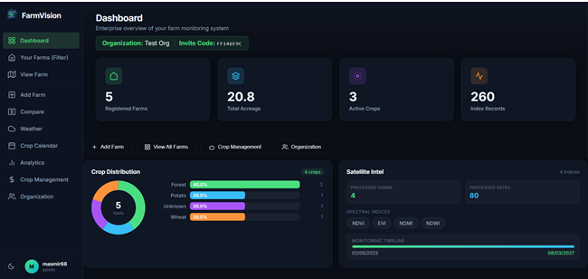
FarmVision — Satellite Crop Analytics
FarmVision is a lightweight, responsive web application for monitoring agricultural fields using satellite imagery and vegetation indices.
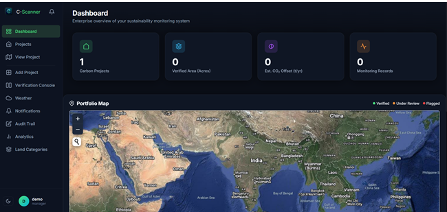
C-Scanner — Satellite Land Analytics Platform
C-Scanner is a responsive web application for monitoring carbon sequestration projects using satellite imagery and vegetation indices.
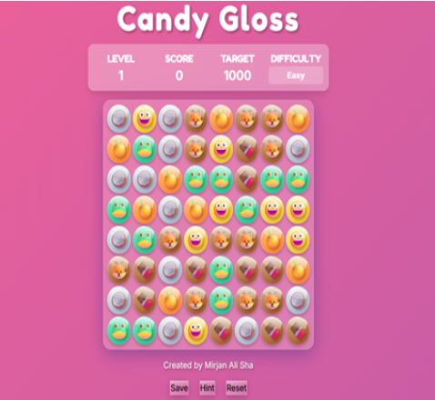
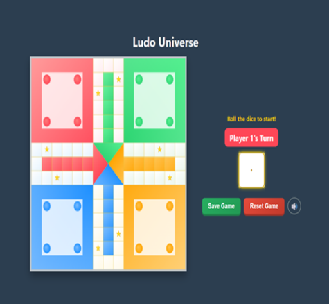
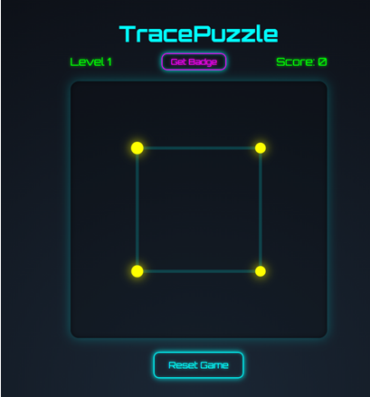
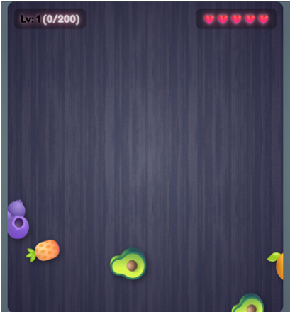
Latest Blog
Featured Articles
GIS Python Automation: From Manual to Automated Workflows
Explore how Python automation transforms traditional GIS workflows, reducing processing time and increasing accuracy in geospatial analysis.
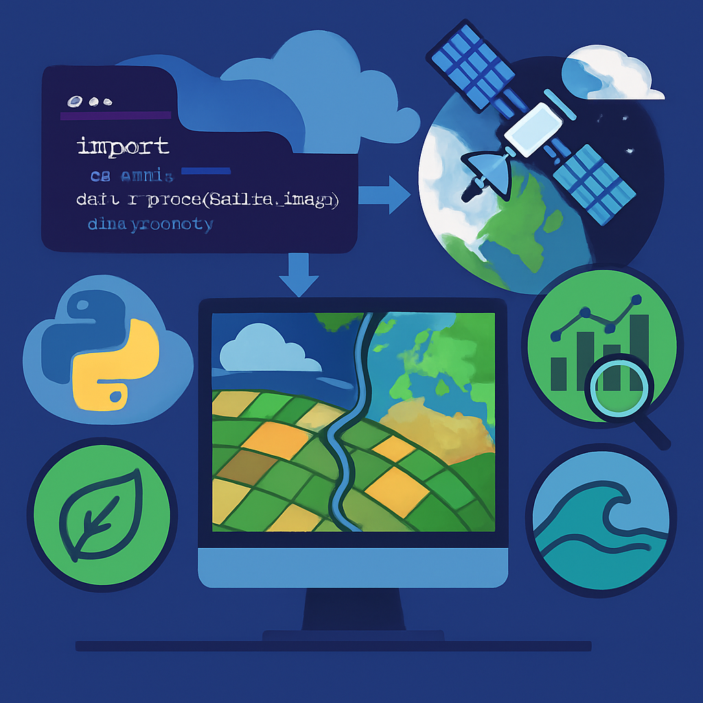
Advanced Satellite Data Processing with Cloud Computing
Learn how to leverage cloud platforms for processing large-scale satellite imagery efficiently using modern tools and techniques.
Machine Learning Applications in Geospatial Analysis
Discover how machine learning algorithms enhance geospatial analysis, from object detection to predictive modeling.
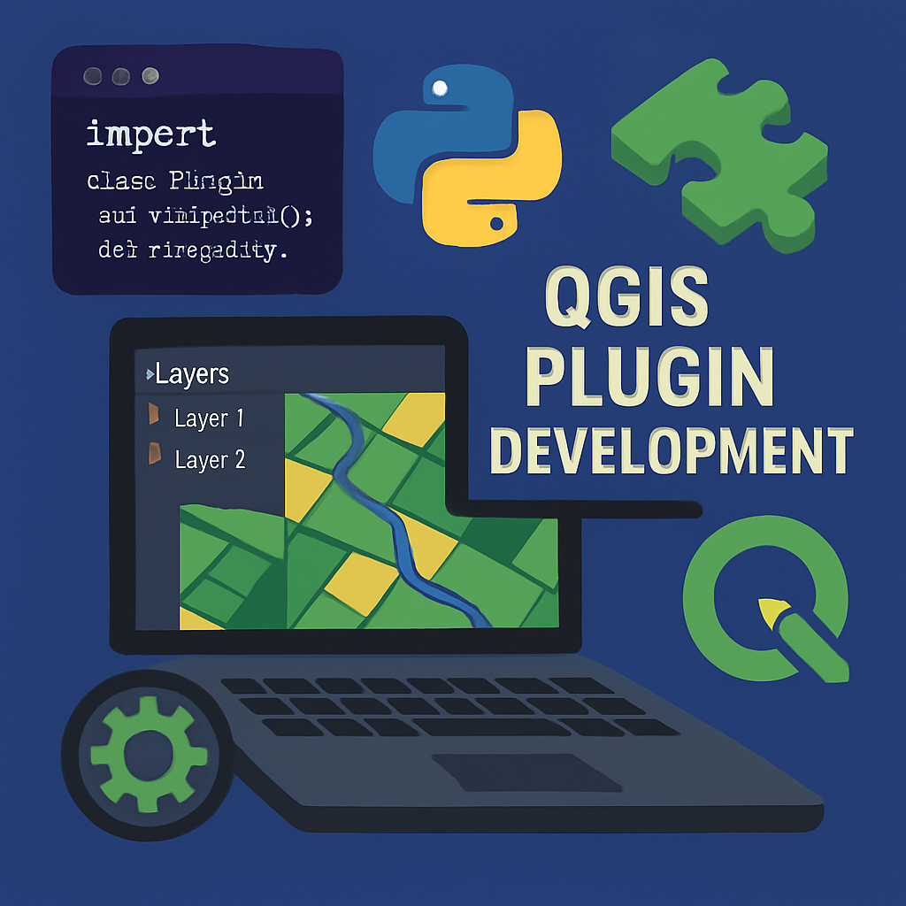
Building Professional QGIS Plugins: A Complete Guide
Step-by-step guide to developing, testing, and publishing QGIS plugins that solve real-world geospatial problems.
More Articles
Docker for GIS Development: Containerizing Geospatial Applications
Contributing to Open Source: My Journey and Lessons Learned
Remote Sensing Applications in Climate Change Monitoring
Mastering Spatial Databases with PostGIS
Python Packaging Best Practices for Geospatial Libraries
GIS Career Guidance: From Student to Professional
WebGIS Development with Modern JavaScript Frameworks
Get In Touch
Frequently Asked Questions
Why did you create this website? +
This website serves as a comprehensive showcase of my professional journey, technical skills, and open-source contributions in the geospatial and data science domains. It provides potential employers, collaborators, and the community with easy access to my work, projects, and expertise. I believe in transparency and sharing knowledge, which is why I've made my projects and learning journey accessible to everyone.
What drives your passion for open-source contributions? +
Open-source development aligns with my belief in democratizing technology and knowledge sharing. Through my PyPI packages and QGIS plugins, I aim to solve real-world problems and make geospatial tools more accessible to researchers, students, and professionals. Each contribution represents a learning opportunity and a way to give back to the community that has supported my growth. I believe that sharing knowledge multiplies its value.
How do you balance technical innovation with cultural sensitivity? +
I approach every project with respect for the cultural context it operates in. Whether working with traditional knowledge systems like astrology or modern satellite data analysis, I maintain a learner's mindset. I focus on understanding the underlying principles, mathematical foundations, and practical applications rather than making judgments about belief systems. This approach has enriched my perspective and made me a more well-rounded developer and data scientist.
What's your approach to learning new technologies and domains? +
I believe in hands-on learning through practical projects. Whether it's mastering PySpark for satellite data processing or understanding Swiss Ephemeris for astronomical calculations, I dive deep into the subject matter. I combine theoretical knowledge with practical implementation, often creating tools or packages that solve real problems. This approach has helped me successfully transition between different domains while maintaining technical depth.
How do you ensure quality in your open-source projects? +
Quality is paramount in all my projects. I follow best practices including comprehensive documentation, unit testing, version control, and continuous integration. Each PyPI package and QGIS plugin undergoes thorough testing before release. I actively maintain my projects, respond to user feedback, and continuously improve based on real-world usage patterns. User experience and reliability are my top priorities.
What's next in your professional journey? +
I'm excited about the intersection of AI and geospatial technologies. My current focus includes developing more sophisticated satellite data processing pipelines, exploring generative AI applications in geospatial analysis, and contributing to climate change solutions through technology. I'm also working on expanding my open-source contributions and potentially pursuing research opportunities in environmental monitoring and sustainable development.
Why Astrokundali (Astrology)? +
The AstroKundali project was one of my early Python learning adventures, specifically designed to master Object-Oriented Programming concepts. It represents my willingness to explore completely different subjects and cultures. From a technical perspective, it helped me understand complex mathematical calculations, astronomical algorithms, and cultural data structures. This project demonstrates that I'm not afraid to step outside my comfort zone and learn from diverse knowledge systems.
Do you consider yourself an Astrologer? +
Absolutely not. I am a Data Scientist and GIS Engineer who developed a technical tool for generating astrological charts. My approach to the AstroKundali project was purely from a software development and cultural learning perspective. I focused on the mathematical and algorithmic aspects of chart generation rather than interpretations or predictions. I respect the cultural significance of astrology while maintaining my scientific approach to problem-solving.
Do you make fun of different cultures or astrology believers? +
Never. I have deep respect for all cultures and belief systems. Astrology, in its original form, was more about understanding personality patterns and human behavior rather than blind adherence to rituals or remedies. Many ancient civilizations used astronomical observations for practical purposes like agriculture and navigation. My project focuses on the technical and mathematical aspects of chart generation, treating it as a fascinating intersection of astronomy, mathematics, and cultural heritage. I believe in approaching different knowledge systems with curiosity and respect, not mockery.